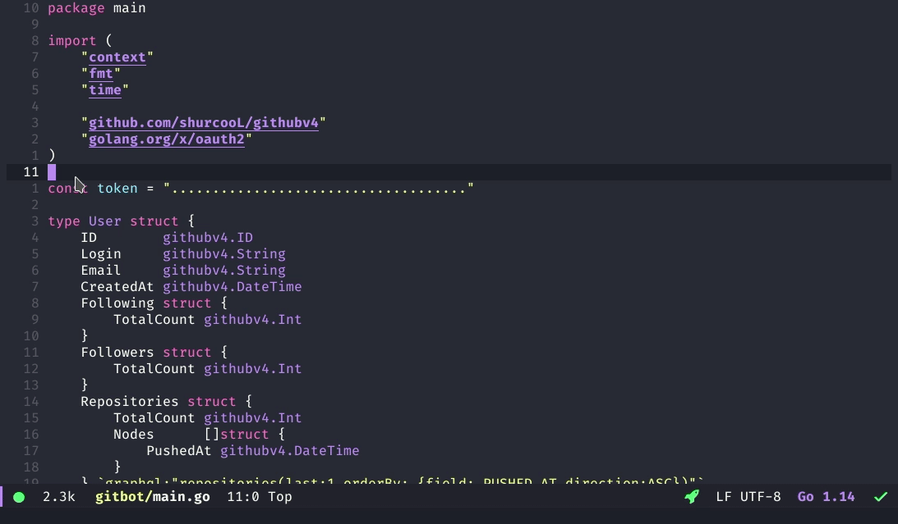

IDE Emacs
Table of Contents

1 Programar con Emacs
1.1 Editar archivos desde la terminal de linux
Si estamos apurados y queremos ver ó modificar un archivo sin entorno gráfico ejecutamos el ide pasando el parámetro -nw
emacs -nw /etc/hosts # abrimos el archivo hosts
Observación: Si queremos evitar pasarle el parámetro, podemos crear un alias en linux
1.2 Atajos
| Atajo | Descripción |
|---|---|
| C | Se refiere a la tecla Ctrl |
| X | Se refiere a la tecla Alt |
| SPC | Se refiere a la tecla Espacio |
1.3 Acciones
| Holy mode | Evil Mode | Descripción |
|---|---|---|
| C-x C-c | SPC-q-q | Salir de Emacs |
| M-x dired | Listar directorio | |
| M-x shell | Spc-' | Abre la terminal |
| M-x list-packages | Lista todos los paquetes |
1.4 Comandos para Edición
| Holy Mode | Evil Mode | Descripción |
|---|---|---|
| C-w | d | Cortar texto |
| X-w | y | Copiar texto seleccionado |
| Y | Copiar desde el cursor hasta final de linea | |
| C-y | p | Pegar texto despues del cursor |
| P | Pegar texto antes del cursor | |
| C-w u | u | Deshacer cambio |
| Shift < Arrow > | v < h/j/k/l > | Seleccionar texto |
| C-x h | Seleccionar todo el texto | |
| C-x | ESC | Cancelar acción |
| C-x C-s | SPC f s | Guardar archivo |
| C-x C-v | Actualizar buffer | |
| o | Insertar linea debajo del cursor | |
| C-k | Borra desde el puntero hasta el final de linea | |
| M-k | Elimina texto hasta final del texto, parrafos | |
| dd | Elimina linea | |
| D | Elimina desde el principio al final de linea | |
| x | Elimina caracter despues del cursor | |
| X | Elimina caracter antes del cursor |
1.5 Comandos de Desplazamiento
| Holy Mode | Evil Mode | Descripción |
|---|---|---|
| C-n | j | Mover cursor hacia abajo |
| C-p | k | Mover cursor hacia arriba |
| C-b | h | Mover cursor hacia la izquierda (backward) |
| C-f | l | Mover cursor hacia la derecha (foward) |
| M-AvPag | Scrollear otra ventana, sin mover el cursor | |
| M-RePag | Scrollear otra ventana, sin mover el cursor | |
| C-s | Busqueda de texto, hacia adelante | |
| C-r | Busqueda de texto, hacia atras | |
| /[patron] RET | Busqueda de texto hacia adelante (n para avanzar, N para retroceder) | |
| ?[patron] RET | Busqueda de texto hacia atras (n para avanzar, N para retroceder) | |
| M-g | < n > gg | Ir a la linea n (Ej. 20gg va a la linea 20) |
| C-g | Finaliza búsqueda | |
| C-u 8 * | Escribe el asterisco 8 veces | |
| M-Delback | Borra por palabras | |
| C-k | Borra desde el puntero hasta el final de linea | |
| M-k | Elimina texto hasta final del texto, parrafos | |
| C-v | Avanzar sig. Página | |
| M-v | Retroceder, anterior página | |
| M-< | Retroceder por palabras | |
| M-> | Avanzar por palabras | |
| C-a | ^ | Principio de linea |
| C-e | $ | Final de linea |
1.6 Control de Buffers
| Comando | Descripción |
|---|---|
| M-x eval-buffer | Cargar configuraciones sin cerrar emacs |
| C-x 1 | Cierras las otras ventanas que no es la actual |
| C-x 2 | Divide la ventana en 2 (horizontal) |
| C-x 3 | Divide la ventana en 2 (vertical) |
| C-x o | Mueve el cursor a la otra ventana |
| C-x b | Cambiar a otro buffer |
| C-x C-b | Listar buffers |
| C-x k | Cerrar ventana (no emacs) |
2 Otros
2.1 Modificar archivos con permisos root
Se procede de igual manera que cuando se abren los archivos,
con la excepción que se agrega /sudo::/ antes de la ruta de archivo
Por tanto deberiamos realizar lo siguiente
C-x C-f /sudo::/ruta/archivo.extension
2.2 Acciones sobre el listado de directorios
Luego de haber lanzar M-x dired se pueden ejecutar acciones estando dentro del listado
| Acción | Descripción |
|---|---|
| d | Seleccionar archivo para aplicarle una acción |
| x | Ejecutar acción |
| g | Actualizar cambios |
| C-x C-f | Crear un archivo |
| C-x C-q | Renombrar archivos (Finalizar con C-c C-c) |
2.3 Referencias
2.3.1 Referencias Web Extraoficiales
3 Configuración personalizada
3.1 Configurar la indentación del código
; Set Indentation (tabs) ; https://www.gnu.org/software/emacs/manual/html_node/efaq/Changing-the-length-of-a-Tab.html ; https://www.emacswiki.org/emacs/IndentationBasics (setq-default tab-width 2)
3.2 Autoindentación
;; https://www.emacswiki.org/emacs/AutoIndentation (add-hook 'lisp-mode-hook '(lambda () (local-set-key (kbd "RET") 'newline-and-indent)))
4 Información Adicional
4.1 Cambiar de buffer
Usando el comando C+x b
Puede continuar usando C-x o para cambiar entre las ventanas.
Cada ventana tiene su propia posición del cursor, pero únicamente una ventana actual
muestra el cursor.
Todos los comandos de edición comunes se aplican a la ventana en que está el cursor.
Llamaremos esto la "ventana seleccionada".
El comando C-M-v es muy útil cuando está editando un texto en una ventana y
usando la otra ventana como referencia.
Puede mantener el cursor siempre en la ventana donde está editando,
y avanzar a la otra ventana secuencialmente con C-M-v
4.2 Guardar
“Esto copia el texto dentro de Emacs al archivo. La primera vez que haga esto,
Emacs renombrará el archivo original con un nuevo nombre para que éste no se pierda.
El nuevo nombre se hace agregando ~ al final del nombre del archivo original.
Cuando guardar haya terminado, Emacs mostrará el nombre del archivo escrito. Deberá guardar frecuentemente, para que no pierda mucho trabajo si el sistema falla.” Puede encontrar un archivo existente, para verlo o editarlo.
También puede hacerlo con un archivo que no exista. Ésta es la forma de crear un archivo en Emacs: encuentre el archivo, que comenzará vacío, luego comience a insertar el texto para ese archivo.
Cuando invoque "guardar" el archivo, Emacs creará realmente el archivo con el texto que ha insertado. De ahí en adelante, puede considerarse estar editando un archivo existente.
4.3 Buffers
CUALQUIER texto que vea en una ventana de Emacs siempre es parte de un buffer. Algunos buffers no corresponden a un archivo.
Por ejemplo, el buffer llamado "Buffer List" no tiene ningún archivo.
Es el buffer que contiene la lista de buffers que ha creado con C-x C-b
El buffer llamado Messages tampoco tiene un archivo correspondiente; contiene los mensajes que han aparecido en la línea de abajo durante su sesión de Emacs.
4.4 Auto guardado
Si ha hecho cambios en un archivo, pero no los ha guardado, éstos podrían perderse si su computadora falla. Para protegerlo de esto, Emacs periódicamente escribe un archivo "auto guardado" para cada archivo que está editando.
El nombre del archivo auto guardado tiene un # al principio y al final también.
Por ejemplo, si su archivo se llama hola.c, su archivo auto guardado será #hola.c#
Cuando guarda por la vía normal, Emacs borra su archivo de auto guardado.
Si la computadora falla, puede recuperar su edición de auto guardado encontrando el
archivo normal (el archivo que estuvo editando, no el archivo de auto guardar)
y entonces si presionamos M-x recover file<Return>.
Cuando le pregunte por la confirmación, presionamos yes<Return> para ir
y recuperar la información del auto guardado.
5 Referencias
- Configuración del archivo Init, ErgoEmacs Ver Página
- Utilizando el Editor de Directorios, GNU Ver Página
- Documentación Oficial, GNU.org Ver Página
- Referencia de comandos, EmacsWiki Ver Página
- Comando C-M-v Scroll-other-window, GNU.org Ver Página
- Renombrar multiples archivos Ver Página
6 Referencias pendientes a revisar
6.1 Otros
6.3 Neotree
6.4 View method, classes
- https://stackoverflow.com/questions/7497132/emacs-ecb-method-window-not-showing-all-methods
- https://superuser.com/questions/629090/emacs-displaying-list-of-subroutines-functions-classes-in-a-source-file
- http://cedet.sourceforge.net/
- https://www.emacswiki.org/emacs/ImenuMode
- http://cedet.sourceforge.net/